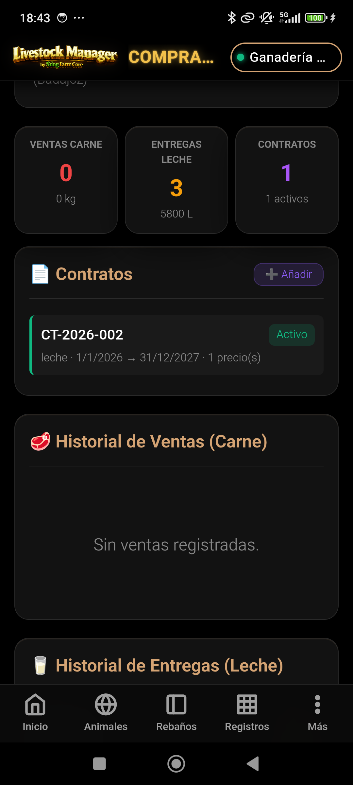
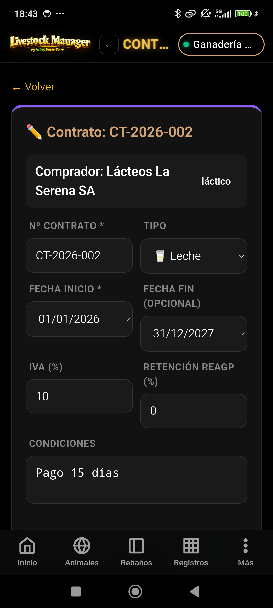
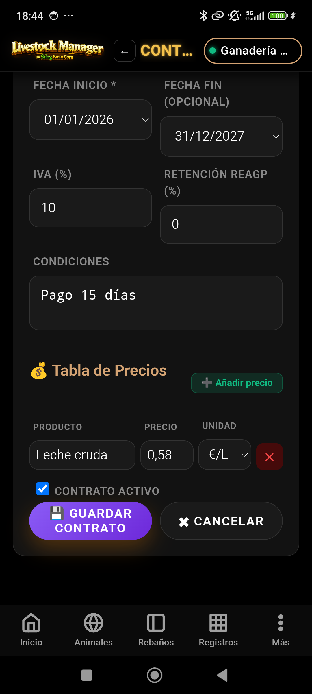

Acuerdos Comerciales y Condiciones de Venta — Guía paso a paso
MANUAL PRÁCTICO · Gestión de contratos comerciales
📖 Sobre este manual
Este manual documenta el módulo de Contratos de Livestock Manager.
Los contratos registran los acuerdos comerciales con compradores: condiciones de venta,
tipos de producto (carne/leche/mixto), períodos de vigencia, IVA y precios pactados.
Los contratos aparecen automáticamente en las liquidaciones de ventas,
en los análisis de precios y en el detalle de cada comprador para garantizar
que todas las operaciones respetan los términos acordados.
Precios: Define los precios por categoría (tabla de precios)
⚠️ Importante: Un contrato solo puede tener un estado: activo o vencido.
Si necesitas cambiar los precios antes de la fecha de fin, crea un nuevo contrato
con fecha de inicio actual.
Estructura
4. Campos y estructura del contrato
Cada contrato almacena información comercial y logística. Los campos se organizan
en dos grupos: datos básicos y tabla de precios.
Datos básicos del contrato
Campo
Tipo
Obligatorio
Descripción
compradorId
Ref. Comprador
Sí
Referencia al comprador asignado
numero_contrato
Texto
Sí
Código único (ej: CT-2026-001)
tipo
Enum
Sí
carne | leche | mixto
fecha_inicio
Fecha
Sí
Fecha de vigencia inicial
fecha_fin
Fecha
Sí
Fecha de vigencia final
iva_pct
Número
Sí
Porcentaje de IVA (ej: 21)
condiciones
Texto
No
Términos especiales del acuerdo
Tabla de precios (subarray)
Campo
Tipo
Descripción
categoria
Texto
Categoría de animal o producto (ej: "Cordero", "Vaca Lechera")
precio_unitario
Decimal
Precio por kg o unidad (sin IVA)
moneda
Enum
EUR (por defecto)
📊 Nota técnica: Los precios se guardan sin IVA. Al liquidar una venta,
el sistema aplica automáticamente el IVA del contrato vigente.
Categorías
5. Tipos de contrato: carne, leche, mixto
El tipo de contrato determina qué productos pueden facturarse bajo este acuerdo.
Tipo
Descripción
Uso típico
Carne
Solo para ventas de animales vivos o canales de carne
Carnicerías, mataderos, exportación cárnica
Leche
Solo para ventas de leche (albaranes lecheros)
Quesería, industria láctea, cooperativas
Mixto
Para venta de ambos productos bajo el mismo contrato
Grandes compradores multiproducto
Nota: Un contrato "Mixto" permite facturar tanto carne como leche,
pero cada línea de venta se asocia a su tipo específico dentro del contrato.
Detalle
6. Tabla de precios en el contrato
La tabla de precios es la estructura central del contrato.
Especifica los precios pactados para cada categoría de producto.
¿Por qué una tabla de precios?
Permite negociar diferentes precios por categoría (cordero vs. vaca, leche de calidad estándar vs. ecológica)
Facilita comparativas precio-pactado vs. precio-real en liquidaciones
Automatiza cálculos en informes de rentabilidad
Crea trazabilidad de los términos comerciales a lo largo del tiempo
📐 Ejemplo: Tabla de precios para Cárnicas Extremeñas
Categoría
Precio sin IVA
Moneda
Cordero 18-24 kg
3,20 €
EUR
Cordero 24-28 kg
3,05 €
EUR
Vaca adulta
2,80 €
EUR
Tip: Es recomendable tener una línea de precio por cada categoría o "corte" de producto.
Esto permite negociar granularmente y comparar exactamente con las facturas reales.
Estados
7. Vigencia y alertas
El sistema automáticamente determina el estado de un contrato según su fecha de fin
y genera alertas cuando está próximo a vencer.
Estados del contrato
Estado
Condición
Indicación visual
✓ Activo
Hoy está entre fecha_inicio y fecha_fin
Etiqueta verde, icono ✓
⏰ Próximo a vencer
Vence en menos de 30 días
Etiqueta naranja, icono ⏰
✕ Vencido
La fecha_fin ha pasado
Etiqueta roja, icono ✕
⚠️ Alertas de vigencia: El sistema muestra una alerta en rojo
si intentas facturar bajo un contrato vencido. Comprueba regularmente la fecha de fin.
Integración
8. Contratos en liquidaciones
Cuando liquidas una venta (Venta Masiva o Albarán de Leche), el sistema
selecciona automáticamente el contrato vigente del comprador y aplica sus precios.
Al seleccionar comprador: El sistema busca contratos vigentes
Aplica automáticamente: Los precios del contrato a cada línea de venta
Calcula IVA: Según el porcentaje especificado en el contrato
Muestra comparativa: Precio pactado vs. precio final liquidado
Guarda referencia: El número de contrato aparece en la factura
📊 En la liquidación: Aparece un campo "Contrato" mostrando el número
del contrato utilizado. Si el comprador no tiene contrato vigente, puedes registrar
los precios manualmente o crear un contrato rápido.
Análisis
9. Contratos en análisis de precios
El módulo de Informes integra los contratos para ofrecer un análisis
detallado de la negociación y el cumplimiento de precios.
Análisis disponibles
Precio pactado vs. real: Comparativa de lo acordado en contrato vs. lo facturado realmente
Histórico de precios: Evolución de precios con el mismo comprador a lo largo del tiempo
Rentabilidad por categoría: Margen de beneficio diferenciado por tipo de producto
Alertas de desviación: Si el precio real se desvía significativamente del pactado
Tip: Usar contratos permite detectar cuándo un precio negociado es muy bajo
comparado con el resto de compradores. Esto ayuda a renegociar mejores términos.
Ejemplos
10. Ejemplos del seed data
El seed data de demostración incluye dos contratos reales para que veas cómo se estructura
un acuerdo comercial típico.
Contrato 1: Cárnicas Extremeñas (Carne)
Campo
Valor
Número
CT-2026-001
Comprador
Cárnicas Extremeñas, S.L.
Tipo
Carne
Vigencia
01/01/2026 - 31/12/2026
IVA
21 %
Condiciones
Mínimo 500 kg/entrega. Transporte a cargo del comprador.
Precios:
· Cordero 18-24 kg
3,20 €/kg
· Cordero 24-28 kg
3,05 €/kg
· Vaca adulta
2,80 €/kg
Contrato 2: Lácteos La Serena (Leche)
Campo
Valor
Número
CT-2026-002
Comprador
Lácteos La Serena, S.L.
Tipo
Leche
Vigencia
01/01/2026 - 30/06/2026
IVA
10 % (reducido)
Condiciones
Recogida cada 2 días. Bonificación +0,02€ si grasa >3,8%. Almacenamiento 4°C.
Precios:
· Leche estándar
0,38 €/litro
· Leche ecológica
0,48 €/litro
Nota: Estos ejemplos muestran cómo estructurar contratos en la práctica.
Puedes usarlos como referencia para crear los tuyos propios.
Capturas
11. Capturas reales en app (demo CHAMORRO)
Capturas del flujo de contratos dentro de la ficha del comprador.

Contr-01 · Panel de contratos en comprador

Contr-02 · Formulario de nuevo contrato

Contr-03 · Tabla de precios pactados
Livestock Manager v6.5 · Manual de Contratos · Acuerdos Comerciales